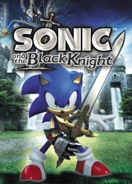
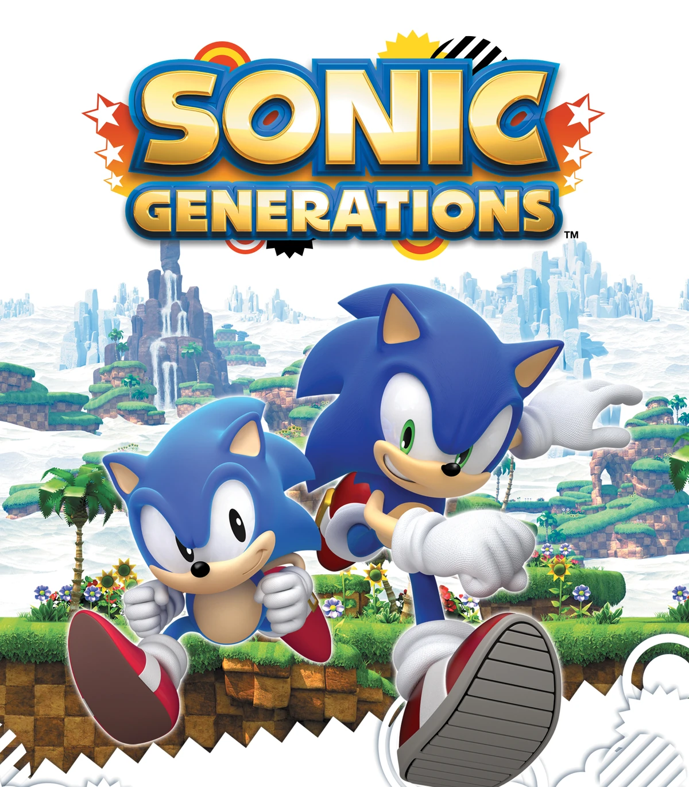

1991

Sonic the Hedgehog released on Sega Genesis.
1992

Sonic the Hedgehog 2 released, introducing Tails.
1994

Sonic the Hedgehog 3 released, introducing new zones and features.
1994

Sonic & Knuckles released, introducing Knuckles and lock-on technology.
1998

Sonic Adventure released on Sega Dreamcast, bringing Sonic into 3D.
2001

Sonic Adventure 2 released, introducing Shadow the Hedgehog.
2003

Sonic Heroes released, featuring team-based gameplay.
2005

Sonic Rush released for Nintendo DS, introducing Blaze the Cat.
2006

Sonic the Hedgehog (2006) released for PlayStation 3 and Xbox 360.
2007

Sonic and the Secret Rings released for Wii.
2007

Sonic Rush Adventure released for Nintendo DS.
2008

Sonic Unleashed released, introducing the Werehog and boost gameplay.
2009
Sonic and the Black Knight released for Wii.
2010

Sonic Colors released for Wii and DS, introducing Wisps.
2011
Sonic Generations released, celebrating Sonic's 20th anniversary.
2013

Sonic Lost World released for Wii U and 3DS.
2017

Sonic Mania released, returning to classic 2D gameplay.
2017

Sonic Forces released, featuring custom characters and modern/classic gameplay.
2022

Sonic Frontiers released, introducing open-zone gameplay.